get与set字段
C#中如果一个字段被private修饰符修饰，那么外界就无法访问
如果想要访问就需要写get与set方法，特别繁琐，C#为我们准备好了get与set
get与set官方为我们准备在了属性中，只需要写与字段对应的属性就行
语法格式如下

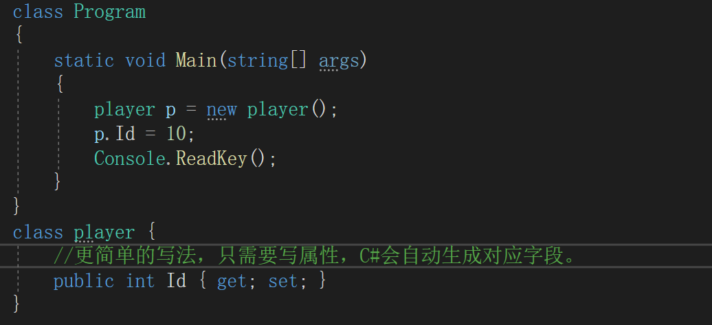
程勋内存区域
程序内存区域：堆 栈 静态存储区
栈空间比较小，但是读取速度快
堆空间比较大，但是读取速度慢
栈的特征
数据只能从栈的顶端插入和删除
把数据放入栈顶称为入栈
从栈顶删除数据称为出栈
堆的特征
堆是一块内存区域，与栈不同，堆里的内存能够以任意顺序存入和移除
数据存储如上图所示，值类型的数据存储在栈内存中，引用类型存储在堆内存中，字符串类型特殊一点存在字符串常量池中，如果字符串是通过对象new出来的那就是存在堆内存中，直接赋值的就是字符串常量池中
继承中的base关键字
在继承中，如果想要访问父类的方法或父类的字段可以用base
比如父类中的某个方法或是字段被子类重写了，但是还是想要执行父类的方法或访问父类的字段就可以通过base关键字来访问。
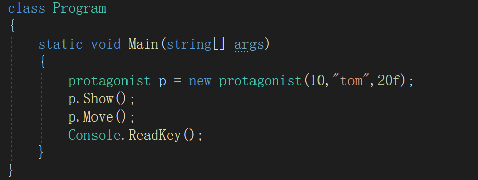 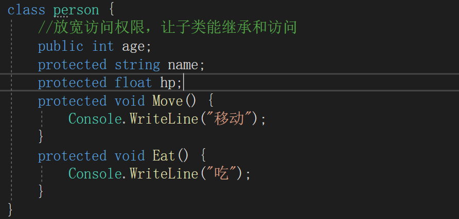 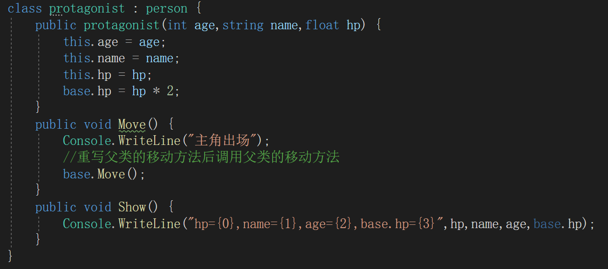hp=40,name=tom,age=10,base.hp=40
主角出场
移动
重写父类方法的特性
在继承中如果子类重写了父类的方法
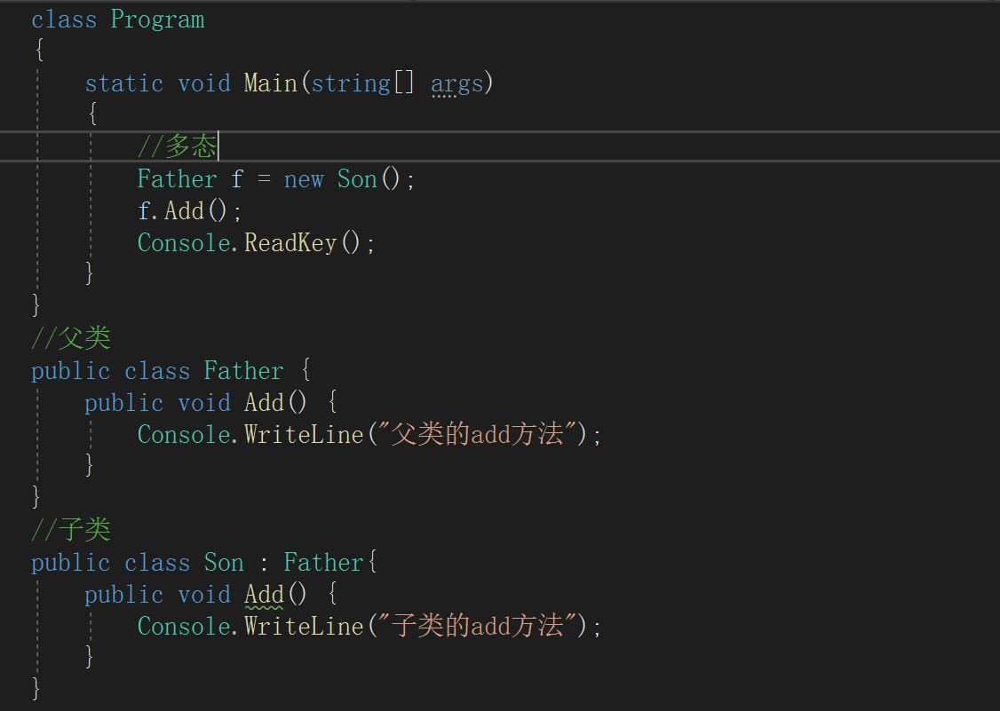通过这种方式重写后调用通过多态调用子类的重写方法依旧会执行父类的方法
在void前加new关键词可以去掉警告但还是会执行父类
继承之虚方法
如上所说重写后出现依旧执行父类的情况
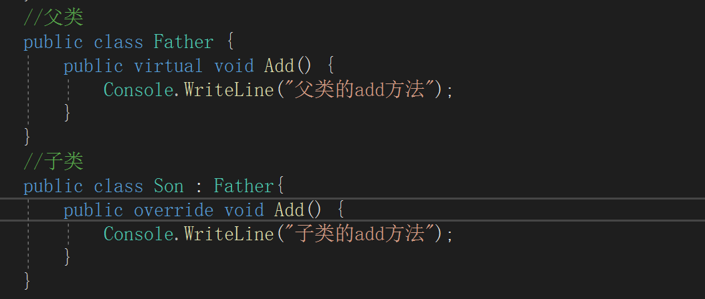虚方法可以解决这个问题，当父类的方法通过virtual修饰符修饰后，子类想要重写就需要通过override修饰重写后的方法
有了这两个关键字的修饰，重写后的方法就不会出现这种问题。
抽象类
在C#中允许将类和函数声明为抽象abstract。抽象类不能被实例化，抽象类可以包含普通函数和抽象函数。抽象函数是只定义了的函数，没有函数体。
C#中的抽象函数都是虚方法，在实现时都需要在public后面加 override关键字
抽象类中不一定有抽象方法，但抽象方法一定在抽象类中
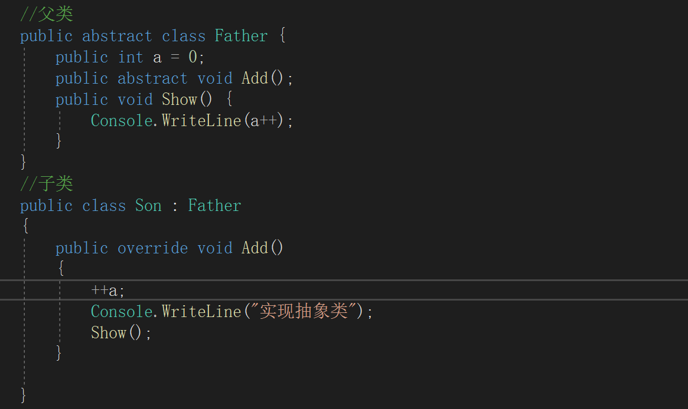密封类
出于商业原因或是防止重写方法照成函数混乱，我们可以使用密封类
在类的权限修饰符后面加上sealed关键字，就代表该类将无法继承
在函数的权限修饰符后面加上sealed关键字代表该函数无法被重写（必须是在重写的函数后面才能加，代表不能二次重写）
子类调用父类构造函数
子类中的无参构造函数会默认调用父类的无参构造函数，而且子类的有参构造函数也会默认调用父类的无参构造。在子类的构造函数调用时会至少调用一个父类的有参或无参的构造函数
我们可以通过指定的方式，让子类的有参构造函数调用时跟着调用父类的。
就是在子类的构造函数后面加上:base(参数...)，默认构造函数后面是无参的也就是:base()，这个无参的就算我们不写系统也会默认执行。
顺序是先执行父类的再执行子类，因为子类继承了父类，所以是先有的父类后有子类
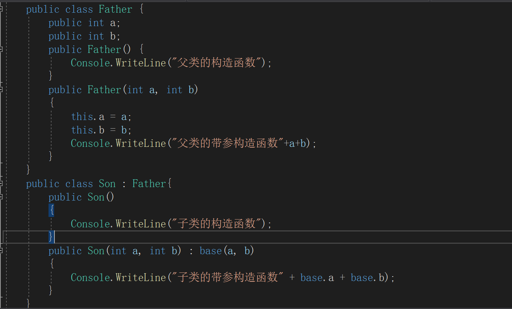泛型类
泛型类就是指定义一个类，这个类的具体类型不确定，这些类型可以在构造时确定下来
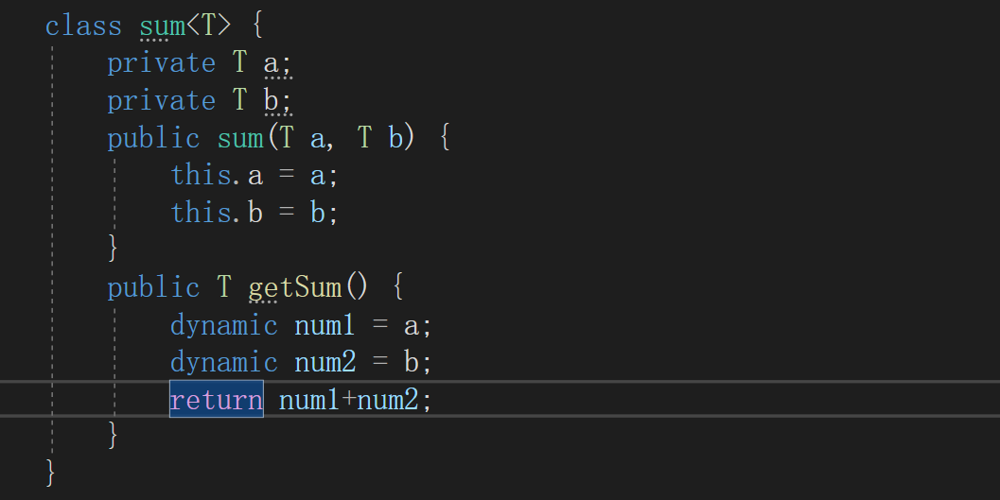泛型通过这个进行声明，在类后面通过<T>进行修饰，之后将不确定的类型通过T进行修饰，这些通过T修饰的变量可以通过构造函数进行赋值
如果需要返回值，而返回值需要计算需要通过dynamic进行二次赋值，因为T类型不能进行计算，通过动态类型dynamic转换后就可以计算了，计算后的结果要再次转换成T类型。（如果没报错可以不转类型）
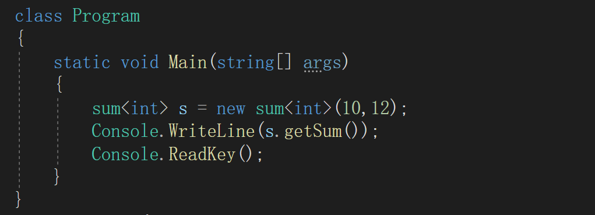
泛型定义好了后也是通过new的方式进行使用，只是类名后面要加上<类型>,使用时一定要指定类型，类型指定后，就要传指定类型的值，不能传其他类型的。可以多new几个分别指定不同类型。
除了泛型类外还有泛型静态方法
泛型静态方法和泛型类一样就是在类名的后面加上<T>
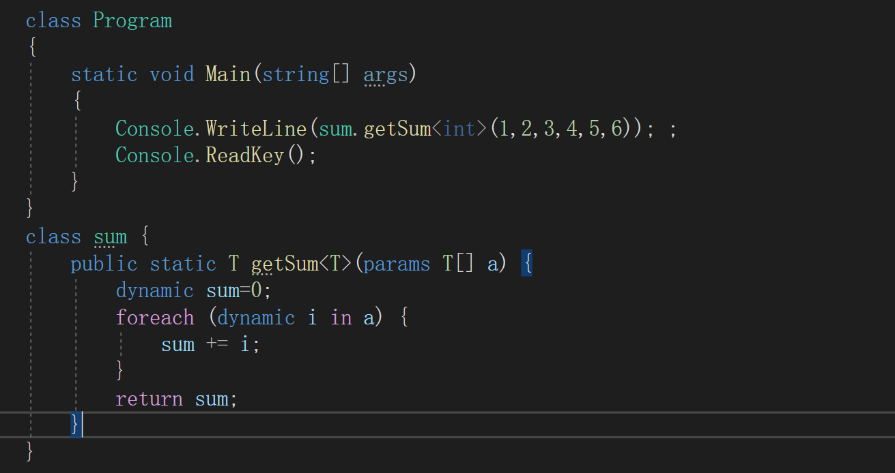泛型方法使用和泛型类一样，这里可以看泛型声明的位置，如果是在类名后面就要在类名后面通过<类型>来指定类型。如果在方法名后面就在方法名后面指定类型